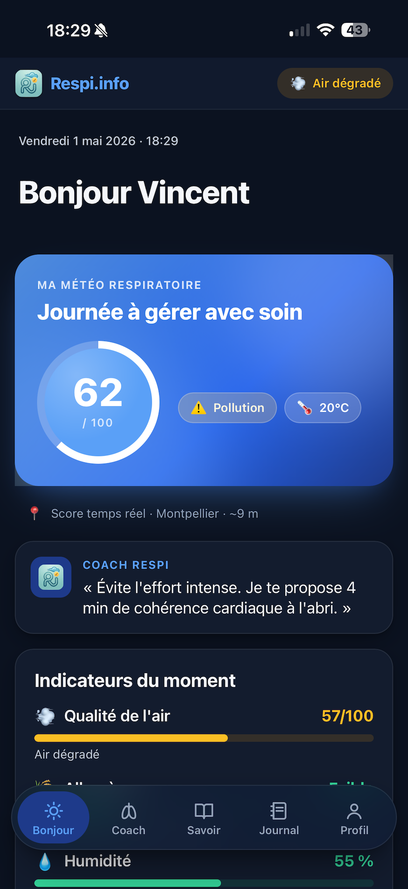
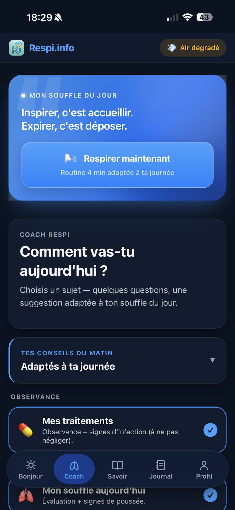
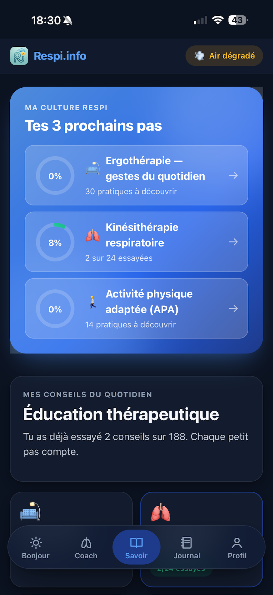
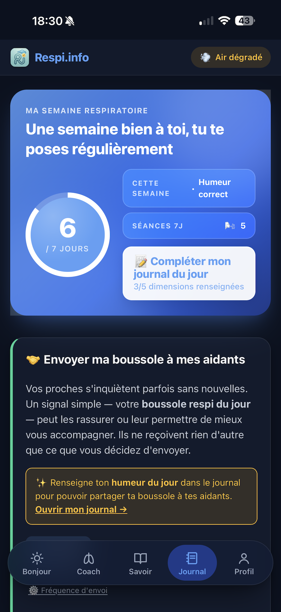

Patients & aidants
Asthme · BPCO · fibrose · HTAP · cancer · apnées
Un outil par et pour les patients. Le module Aidants permet à un proche de suivre tes signaux pendant 90 jours.
En savoir plus →Respi.info croise la qualité de l'air, les pollens, la météo et plus de 11 pathologies pour te proposer en moins de 4 minutes une routine de respiration, de mouvement et de sécurité — sans décision à prendre.
Maladies respiratoires chroniques Asthme BPCO Fibrose HTAP PID Allergies Apnées

Le matin pour comprendre l'air. Au quotidien, un compagnon qui propose un geste adapté. À ton rythme pour apprendre. Et chaque semaine, un signal léger pour tes proches.
Un score 0–100, calculé à partir de la qualité de l'air, des pollens, de la météo et de tes pathologies. Une phrase d'orientation, pas une décision à prendre. Et le coach propose un geste concret en moins de 4 minutes.
📚 Sources publiques. Atmo France · RNSA · Copernicus CAMS · Météo France.
Le Coach Respi adapte son ton à ta pathologie : serein pour l'asthme, rassurant pour la BPCO, respectueux pour le cancer, encourageant pour la fibrose. Une routine de 4 min de cohérence cardiaque, des conseils du jour, le suivi de tes traitements.
🫁 Garde-fous médicaux automatiques. Sur signaux sévères, redirection 15 / SAMU.

188 pratiques sourcées et tracées : ergothérapie, kinésithérapie respiratoire, APA, sophrologie, nutrition respi-friendly, sommeil. L'app te propose tes 3 prochains pas — un seul à la fois, jamais surchargé.
📚 Sources : HAS · FFAAIR · EM-Consulte · SPLF.

Une boussole envoyée par email à tes proches aidants : 4 infos clés (souffle, énergie, moral, environnement) qui leur permettent de comprendre ton état en un coup d'œil. Tu décides qui voit quoi, et pendant combien de temps.
🤝 90 jours de partage révocables à tout moment.

Respi.info fonctionne déjà sur tous les téléphones et ordinateurs depuis ton navigateur. Tu peux aussi l'installer sur ton écran d'accueil en deux gestes — comme une vraie app, sans passer par un store.
Un outil par et pour les patients. Le module Aidants permet à un proche de suivre tes signaux pendant 90 jours.
En savoir plus →Un compagnon entre les consultations, pas à la place. Plan d'action HAS éditable et imprimable A4.
En savoir plus →Suivi quotidien des pollens (RNSA), du PM2,5 (Atmo France) et tendance 4 jours (Copernicus CAMS).
En savoir plus →Un commun numérique, gratuit, édité par une association loi 1901. Coopération éditoriale ouverte.
En savoir plus →Cinq promesses tenues, écrites en clair — pas perdues dans des CGU à 20 pages.
Pas de publicité, pas de monétisation cachée, pas de revente de données à des labos, mutuelles ou assureurs.
AIPD réalisée, DPO désigné. Migration HDS prévue dès la V1 médicale. Export et effacement à tout moment.
Respi.info n'est pas un dispositif médical. Sur signaux sévères, redirection immédiate vers le 15 et l'équipe soignante.
Atmo, RNSA, Copernicus, Météo France pour les données. HAS, GINA, GOLD, FFAAIR, SPLF pour le contenu médical.
Édité par JOOY (association loi 1901). Coopération éditoriale ouverte aux associations de patients.
Toutes les données et tous les contenus médicaux affichés dans l'app citent leur source. Voici les principales.
Crée ton compte gratuit, déclare tes pathologies, et reçois ta première météo respiratoire personnalisée demain matin.